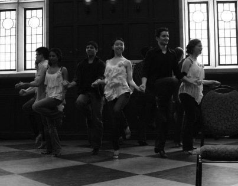
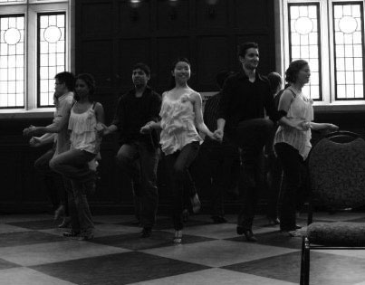

Hello! My name is Irene Yiu.
I am a developer learning Ruby on Rails at Dev Bootcamp.
I like to code, travel, dance, and eat meat.
¿Cómo te llamas?
What's my quirk? Well, I'm a huge language nerd. When I was 8 years old, I started teaching myself Spanish using a CD-ROM program and a microphone. Later on in college, I learned Mandarin Chinese, Russian, and Spanish - at one point, simultaneously! I also studied abroad at the Universidad de Sevilla in Spain for one semester. More recently, I taught myself basic French and Icelandic before I traveled to Paris and Reykjavik.
(Check out my travel pics!)

On the Dance Floor
I wished I could have learned ballet as a child, but that never happened. I discovered dancing later on in life. In high school, I learned flamenco because it seemed cool and exotic. At the University of Pennsylvania, I learned the latin and ballroom dances. Rumba, cha cha, samba, waltz, foxtrot... you name it! I also competed at various schools along the East Coast. Nowadays, I'll dance salsa and bachata occassionally. And I like to break it down Gangnam Style!
 



© 2013 Irene Yiu, Inc. All Rights Reserved.